Carrossel do Gustavo 🐳
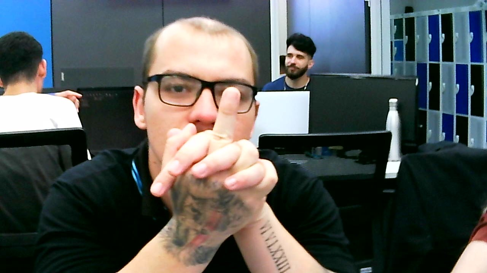
 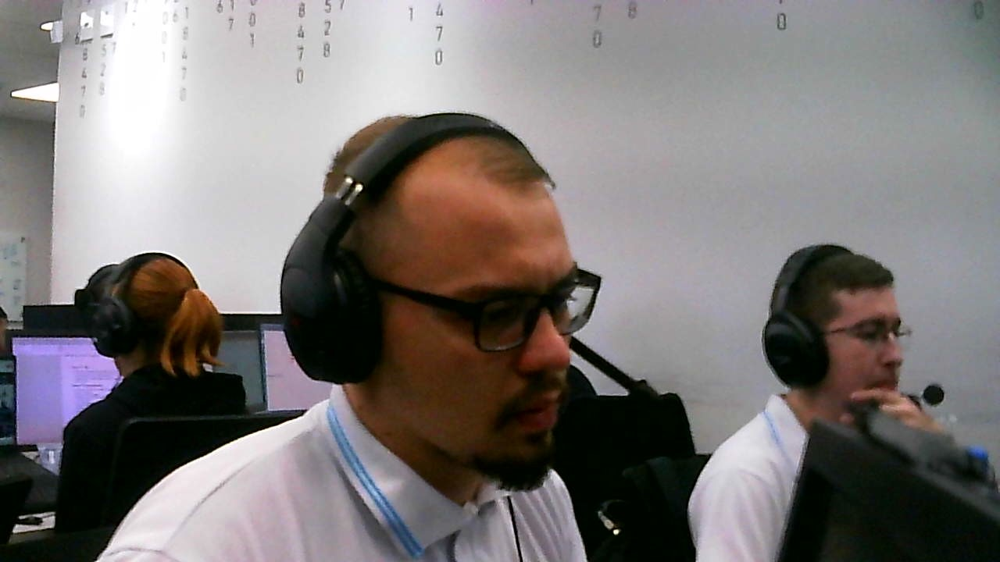
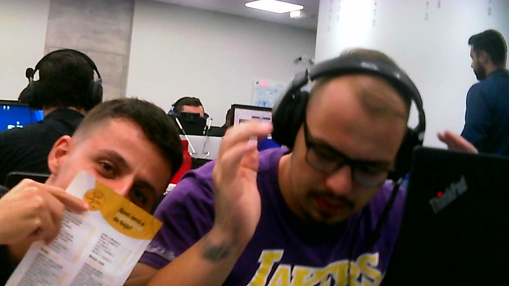
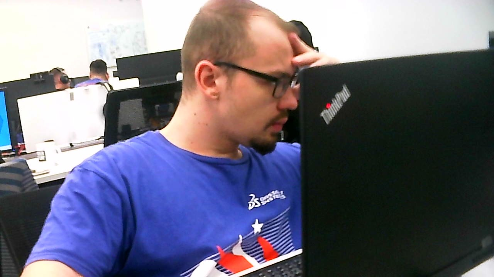
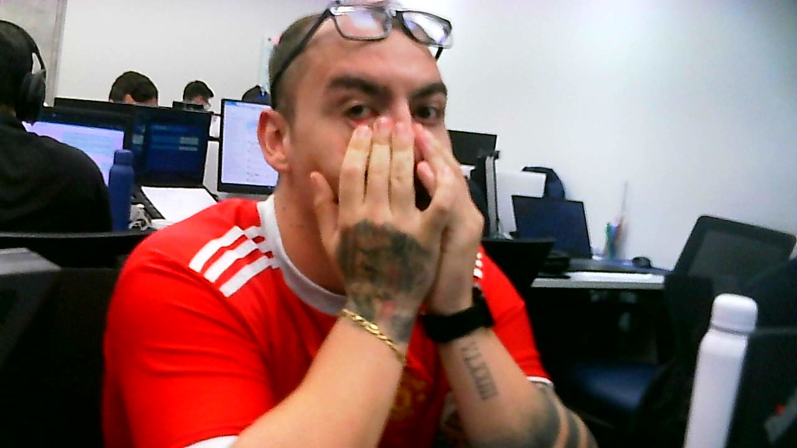
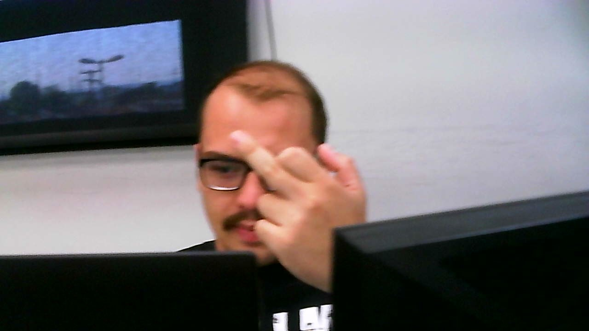
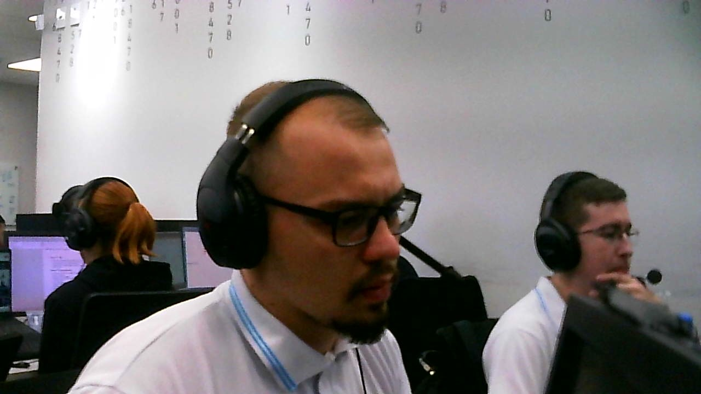
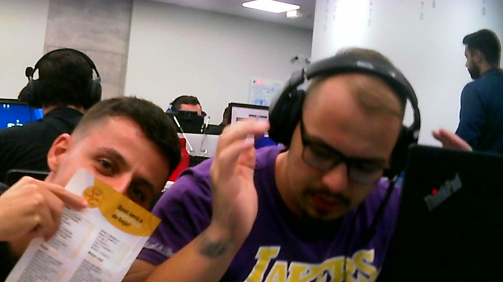
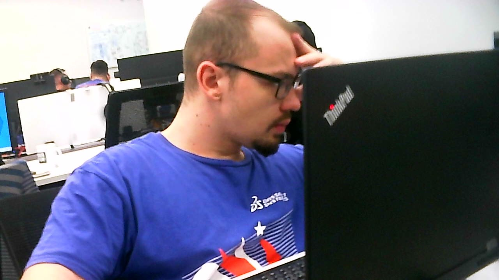
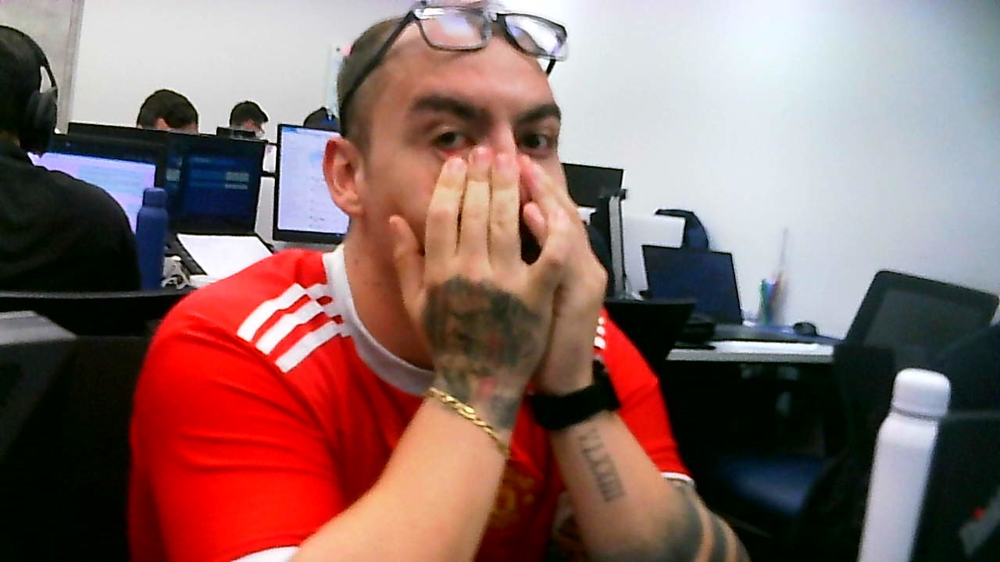
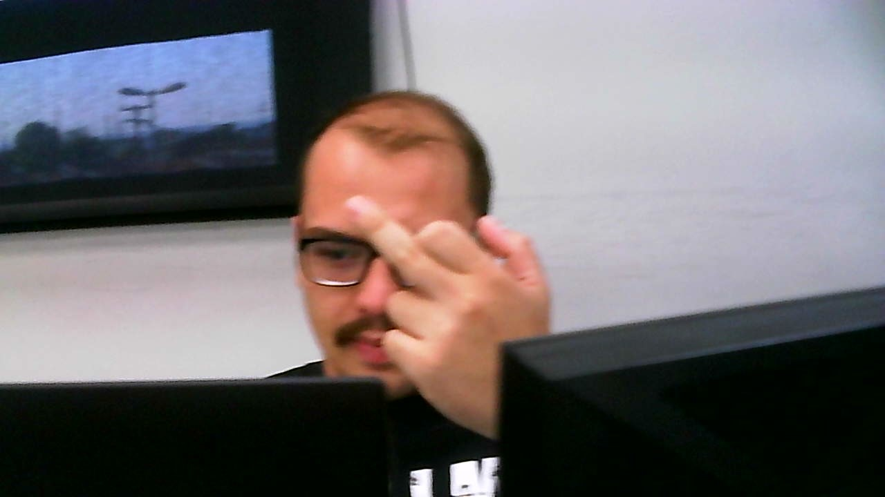
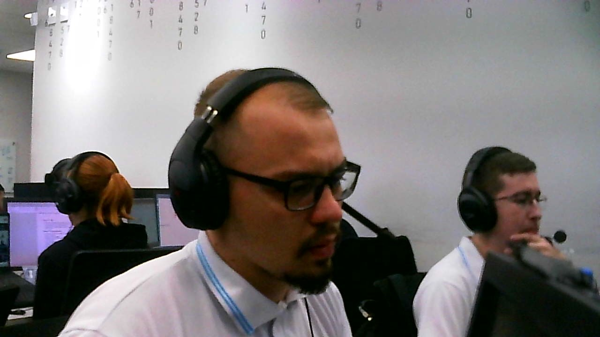
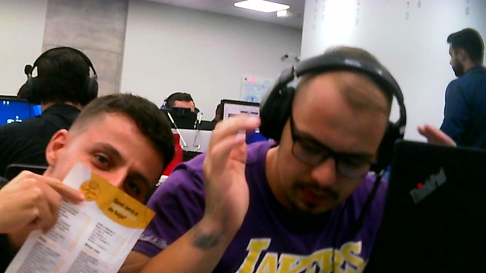
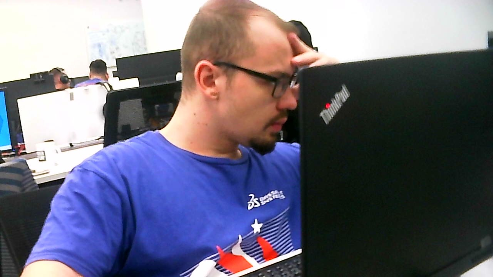
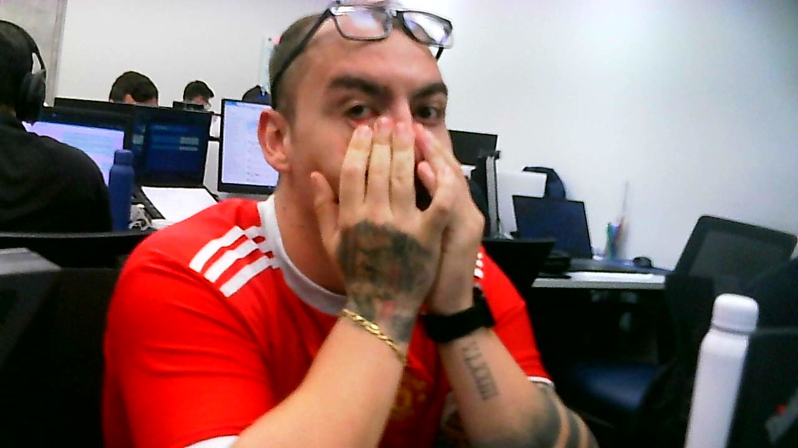
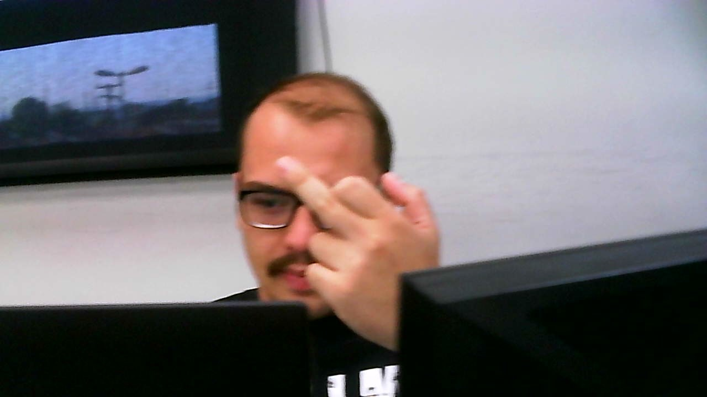
Sobre a Baleia Beluga
A baleia beluga é um dos animais mais fascinantes do oceano. Conhecida por sua cor branca única e por seus sons cantados, ela vive nas águas geladas do Ártico. Neste site, vamos misturar a beleza da beluga com o carisma do Gustavo.
Galeria de Gustavo (com Belugas 🌊)
Quiz das Belugas 🐳
1 Aproximadamente qual é o seu peso?
2 Aproximadamente qual é a cincuferencia de sua cabeça?
3 Qual é meu apelido carinhoso?
4 Quais carecteristicas me define?
5 O que mais me fodeu perante a vida?